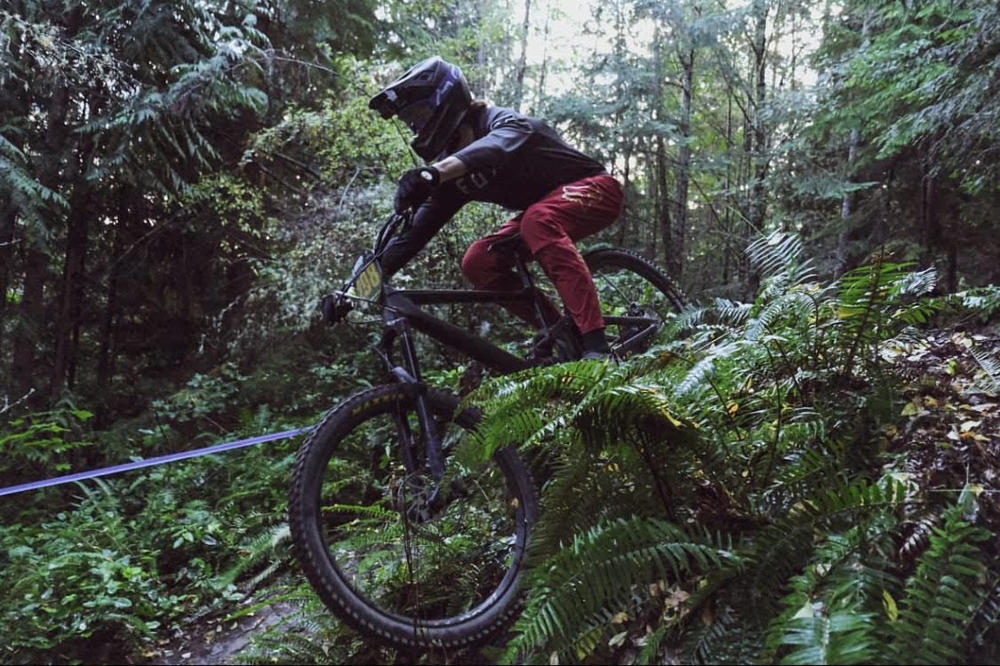

Since I started mountain biking I have participated in 2 seasons of the NW cup, a downhill race series with races across Washington and neighboring states.
Downhill races involve a set, strictly downhill course(as the name implies) of 3-5 minutes. One rider is put on the course at a time and races against the clock, fastest time wins. A race will usually involve a 3 day event with two days of open practice for riders to get used to the course before race day on the final day.
Placing well at one race will give you points, and the rider with the most points at the end of a season, wins the series.
Me riding my bike in a NW Cup downhill race in Port Angeles, WA.